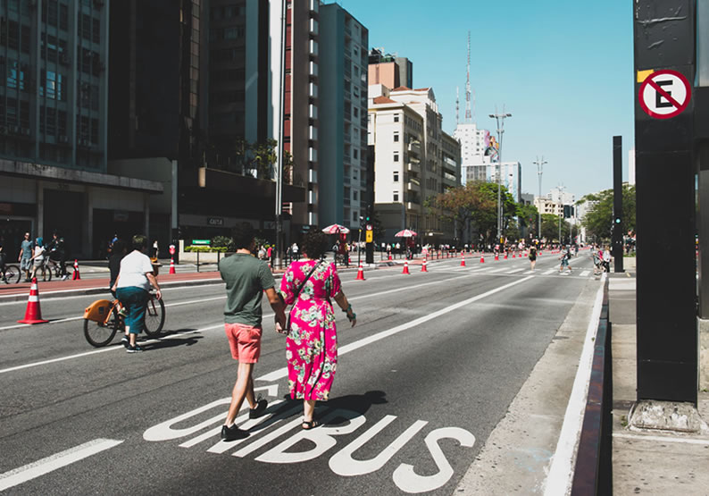

A principal avenida da cidade está entre os lugares turísticos em SP obrigatórios no roteiro de qualquer viagem!
Com quase 3 km de extensão, você pode visitar a avenida muitas vezes, durante muitas viagens, e vai se surpreender com quantos passeios vai encontrar sem repetir programas.

Até quem nunca foi à Sampa já ouviu falar… O Parque Ibirapuera, um dos principais lugares turísticos em SP, é o verdadeiro point da cidade.
O primeiro e mais importante parque paulistano, é também o mais visitado da América do Sul!
São Paulo oferece para turistas uma infinidade de programas culturais, de entretenimento e esportivos.
São tantas opções que desse jeito parece difícil montar um roteiro São Paulo, né? Não se preocupe!
Os passeios são para todos os gostos, como museus, teatros, bares, restaurantes e shows. Entre eles, nós separados 15 paradas obrigatórias para você fazer na capital.